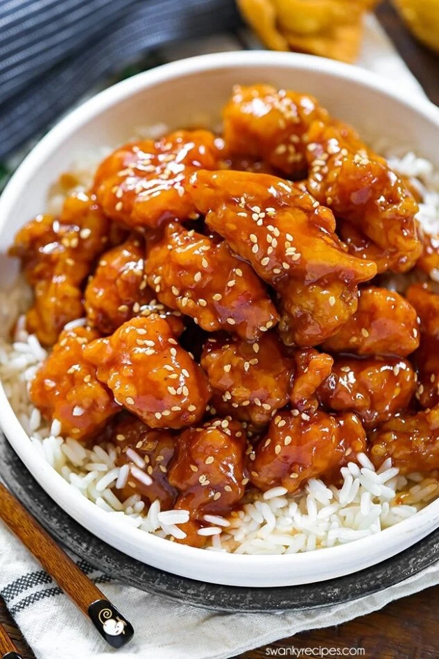

If you like chicken your gonna love this. The first form of sweet and sour chicken was made in Hunan, China. Sweet and sour chicken spread to the United States in early 1900s. The original sauce looked very different and did not have a as pungent red look. Today it has become more westernized and includes more ingredents like sugar and fruit juice. The sauce is layered on top of a battered fried chicken. This is my favorite Chinese dish. It can be paired very nicely with any rice or appetizer. If you have not tried this yet I 100% reccomend.
